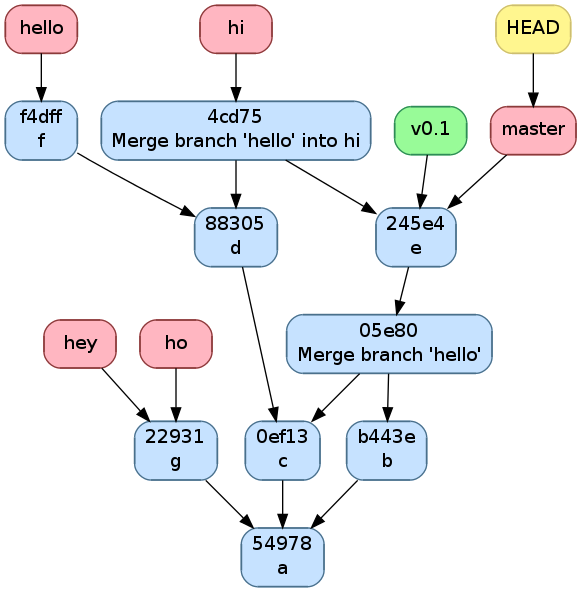
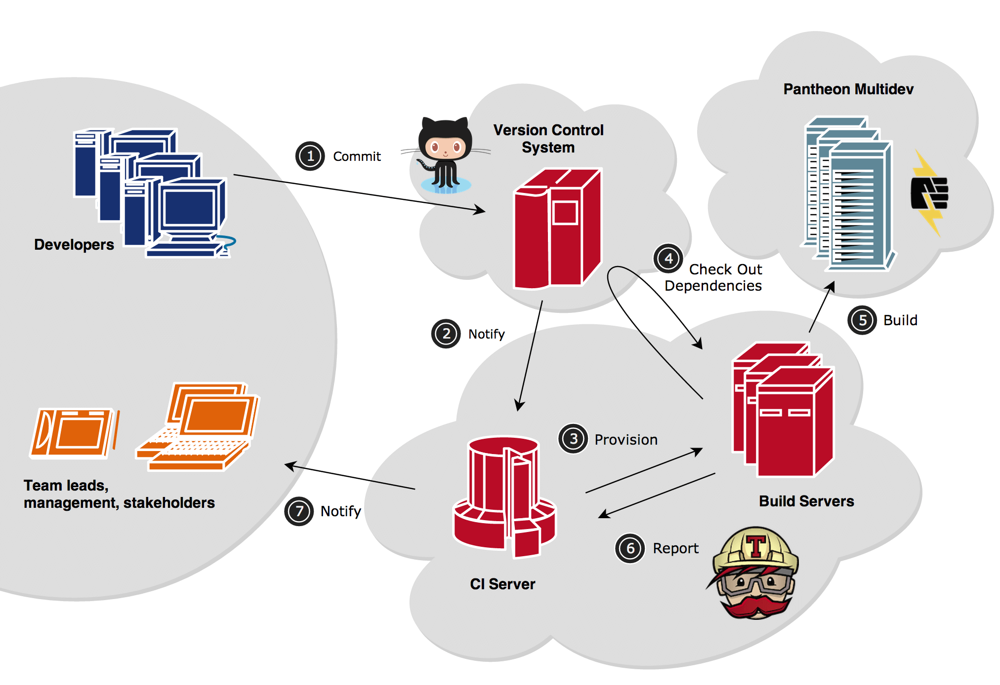

GIT et Github
Les avantages de Git
Décentralisation

Gestion des branches

Fusion des branches : merge

Rebase des branches : rebase

Les inconvénients de Git
La complexité
Le nombre de commandes

Synchronisation
Création : clone
$ git clone git@github.com:leroilion/git.git
Cloning into 'git'...
remote: Counting objects: 3, done.
remote: Total 3 (delta 0), reused 0 (delta 0), pack-reused 0
Receiving objects: 100% (3/3), done.
Checking connectivity... done.

Création : init
$ git init
Initialized empty Git repository in C:/Users/Jérémy/Documents/git/tmp/.git/
$ git init --bare
Initialized empty Git repository in C:/Users/Jérémy/Documents/git/tmp/
Synchronisation : fetch
$ git fetch
Synchronisation : pull
$ git pull origin master
From github.com:leroilion/git
* branch master -> FETCH_HEAD
Already up-to-date.
$ git pull origin master --rebase
From github.com:leroilion/git
* branch master -> FETCH_HEAD
Current branch master is up to date.
Synchronisation : push
$ git push origin master
Counting objects: 20, done.
Delta compression using up to 8 threads.
Compressing objects: 100% (18/18), done.
Writing objects: 100% (20/20), 844.41 KiB | 0 bytes/s, done.
Total 20 (delta 1), reused 0 (delta 0)
remote: Resolving deltas: 100% (1/1), done.
To git@github.com:JeremyActronika/git.git
* [new branch] master -> master
Travail local
Voir l'état du dépot : git status
$ git status
On branch master
Changes to be committed:
new file: img/status.png
Changes not staged for commit:
modified: index.html
Untracked files:
img/add.png

Voir les différences : git diff
Ajouter des fichiers : git add
$ git add img/add.png

Créer le commit : git commit
$ git commit -s // And add comment message
[master a3eb86e] Update part local work
4 files changed, 38 insertions(+)
create mode 100644 img/add.png
create mode 100644 img/commit.jpg
create mode 100644 img/status.png
Voyage entre les branches
Créer une branche : git branch
$ git branch feature_x

Changer de branche : git checkout
$ git checkout feature_x
M index.html
Switched to branch 'feature_x'
Réinitialiser une branche : git reset
$ git reset 9fe729
Unstaged changes after reset:
M index.html

Modifier l'architecture : git rebase
$ git rebase -i HEAD~2
Récupérer un commit : git cherry-pick
$ git cherry-pick dba672
On branch master
You are currently cherry-picking commit dba672b.

Ajouter des marqueurs : git tag
$ git tag -a theLionKing
Un workflow
git flow
pull request
Des outils de travail
Serveur central : github

Des tickets

Gestion de projet
Les hooks
Test unitaire : travis
Pour aller plus loin
- git add -p
- git bisect
- git blame
- git commit --amend
- git submodule update --init
- git submodule add ...
- git remote add origin ...
- git filter-branch -f --index-filter 'git rm --cached --ignore-unmatch*.mp3' --prune-empty --tag-name-filtercat -- --all
Des questions ?